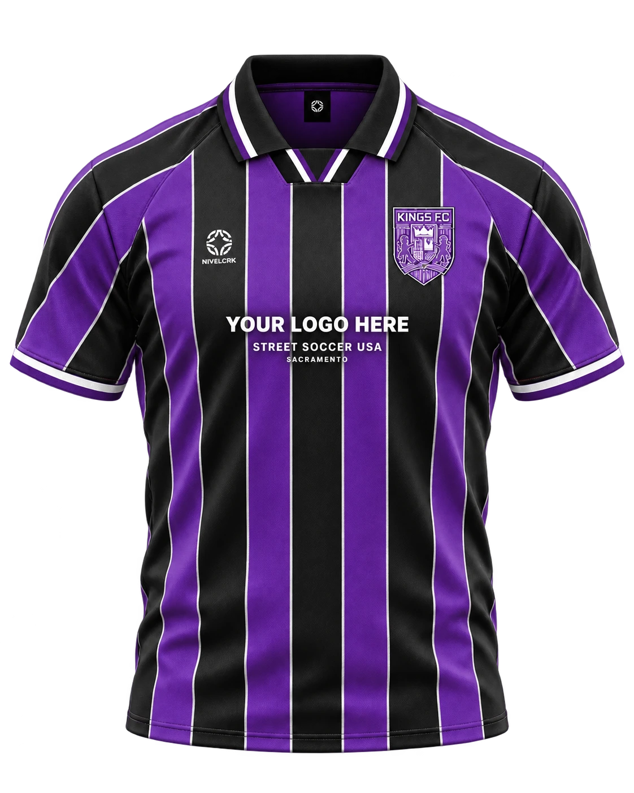
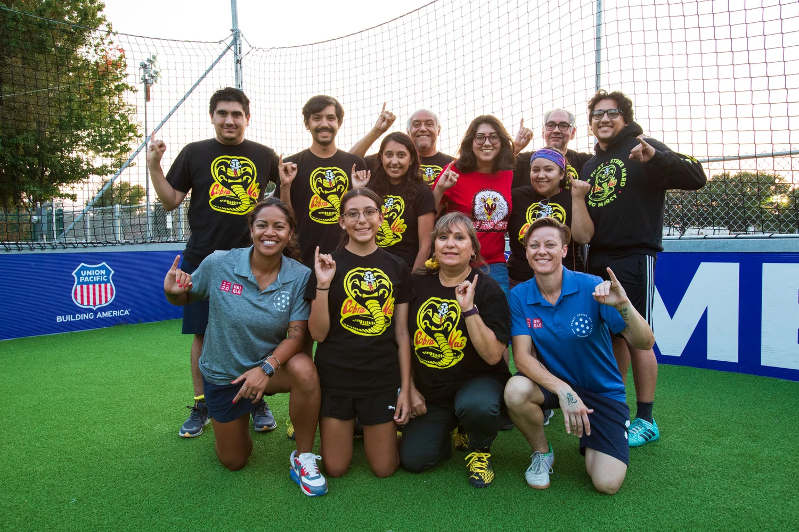
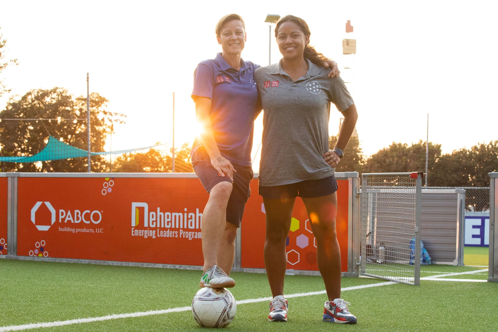
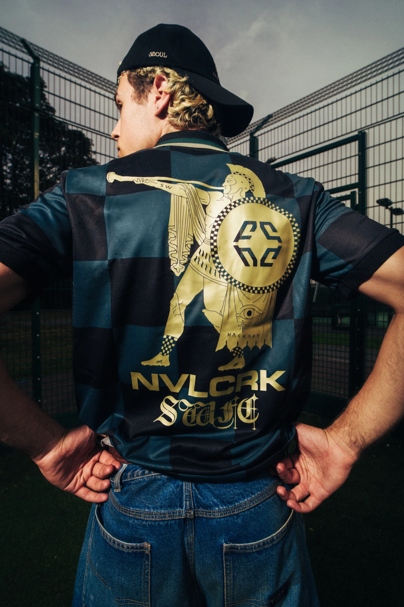
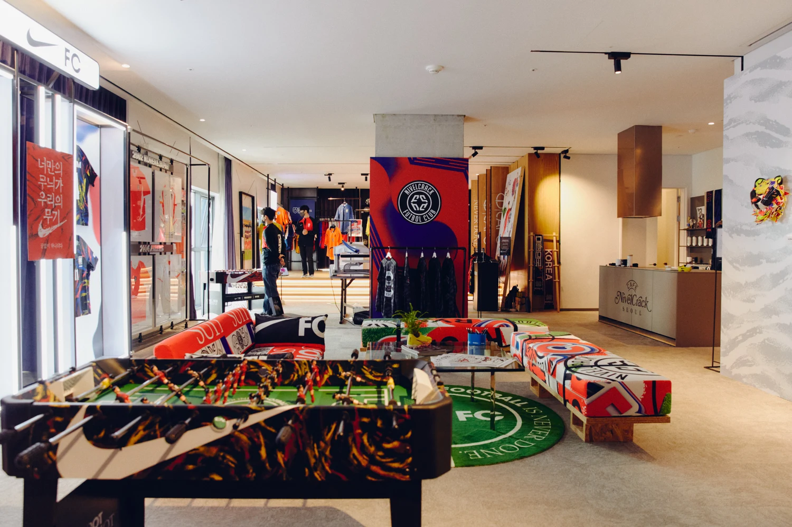
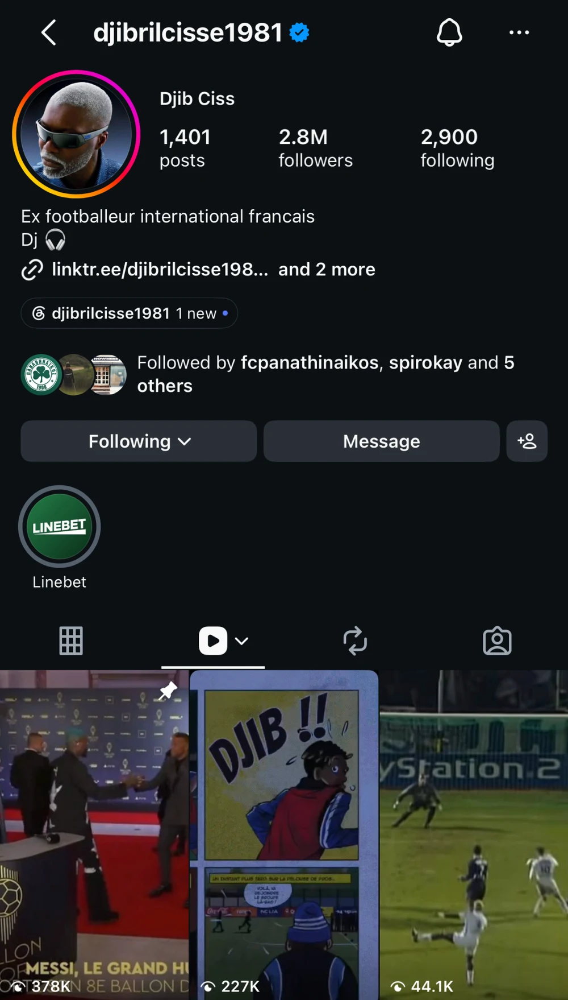
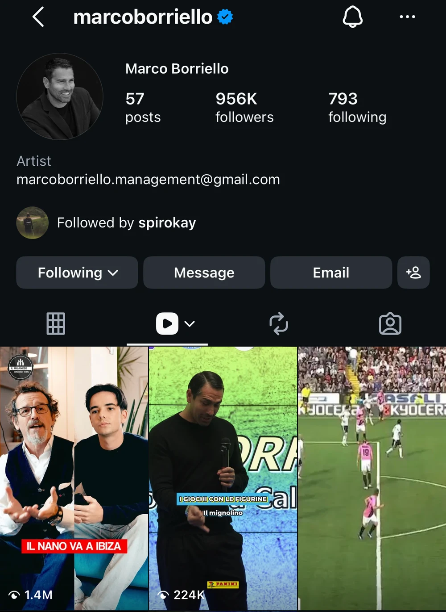
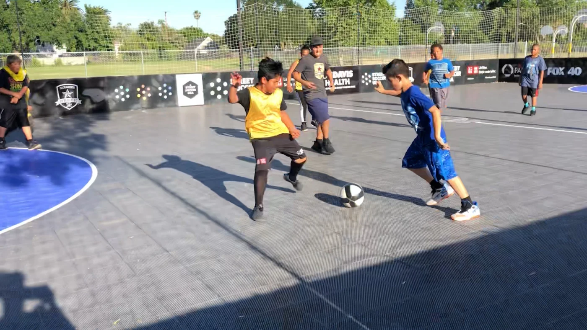

SACRAMENTO
KINGS
Sacramento’s NBA team.
Kings FC brings that identity into football culture.

A jersey that brings worlds together.
In collaboration with the Sacramento Kings and Nivelcrack. A global campaign with nonprofit Street Soccer USA Sacramento at its heart.


Football helped Lisa Wrightsman rebuild her life. With Tiffany Fraser, she helped create that same sense of belonging for others in Sacramento.
Street Soccer USA is a nonprofit using soccer to fight poverty and create belonging. This campaign puts its Sacramento community on a global stage.
Read their storyCity pride. Global football culture.
A community worth showing up for.
Sacramento’s NBA team.
Kings FC brings that identity into football culture.
Seoul-born football culture.
Design that travels across borders.
Nonprofit. Local impact.
Real people. A place to belong.
An NBA franchise. A global football label. A nonprofit at the heart.
The ambition: a first-of-its-kind Kings campaign, bringing this collaboration and global football icons together.
Concept jersey. Talent participation pending.


Selected projects from the supplied brand deck. Prior collaborators, not sponsors of this campaign.
The Sacramento Kings’ hometown identity, connected to the world’s football and streetwear communities.
The Sacramento Kings, Street Soccer USA, and the community at the center of it all.
COMBINED INSTAGRAM
FOLLOWER SNAPSHOT*

@djibrilcisse1981

@marcoborriello
*Supplied Instagram screenshots, October 8, 2026. Combined count is approximate, overlaps audiences, and is not a reach forecast. Talent appearances and posts remain to be agreed.
Selected outlets from Nivelcrack’s supplied media roster. Editorial outreach is an opportunity; coverage is not booked.
A street soccer court outside Golden 1 Center, home of the Sacramento Kings.
Local players. Global icons. One shared pitch.

Jersey details, local voices, and a reveal worth waiting for.
A community-led reveal with proposed talent and sponsor integration.
Launch film, partner channels, talent content, press outreach, and paid creative.
Arena location, permits, talent, partner posts, and event format are proposed and subject to approval. Launch date to be agreed.
Your brand helps bring the story to life.
You leave with a campaign made for your channels.
One cinematic launch film connecting the jersey, the people, and your brand.
A dedicated brand edit built for your campaign, with a clear closing message.
Short-form edits for paid and organic use across agreed channels and formats.
Edited photographs of the product, the community, and the launch atmosphere.
Proposed starting scope. Final quantities, formats, production plan, and usage terms will be agreed with the partner.
Proposed front-of-jersey placement, campaign presentation, launch integration, and brand-specific edits.
A considered chest placement alongside the community story.
Brand treatment woven into the film, edits, and launch experience.
A planned asset handoff for agreed organic and paid use.
All logo placements and commercial rights are proposed. Talent, music, term, territory, exclusivity, and paid usage require agreement.
Delivered views, video completion, and reach where channel reporting is available.
Shares, saves, engagement, and real responses to the community story.
Trackable visits and agreed sponsor actions, with paid results reported separately.
Success measures are set with the sponsor before launch. No invented impression promises.
A global game.
A Sacramento heart.
A place for your brand.